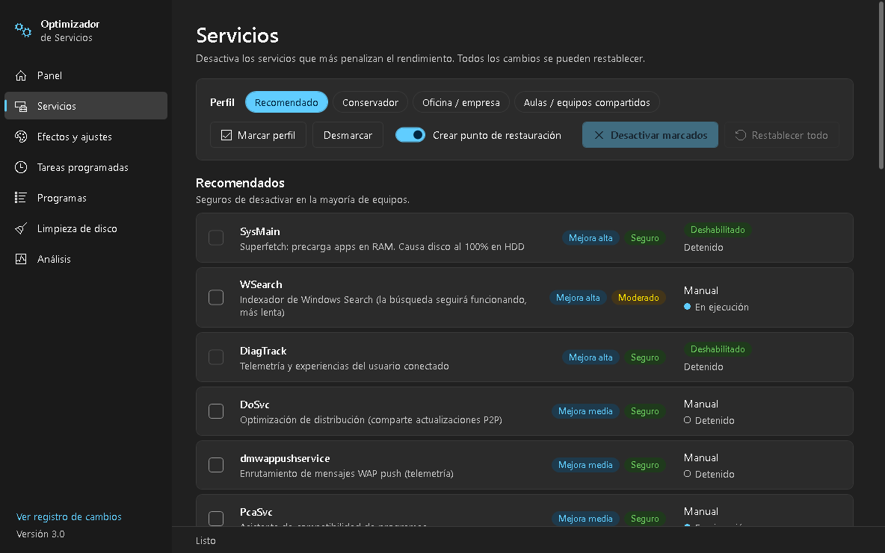
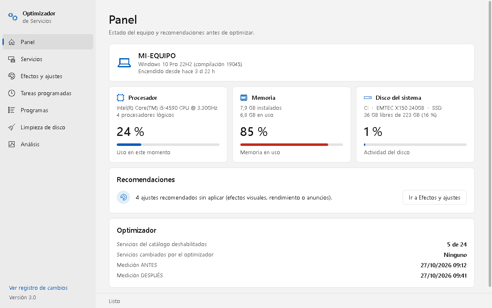
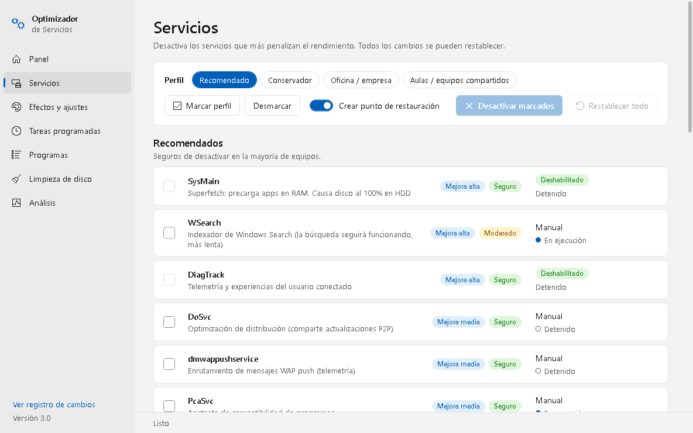
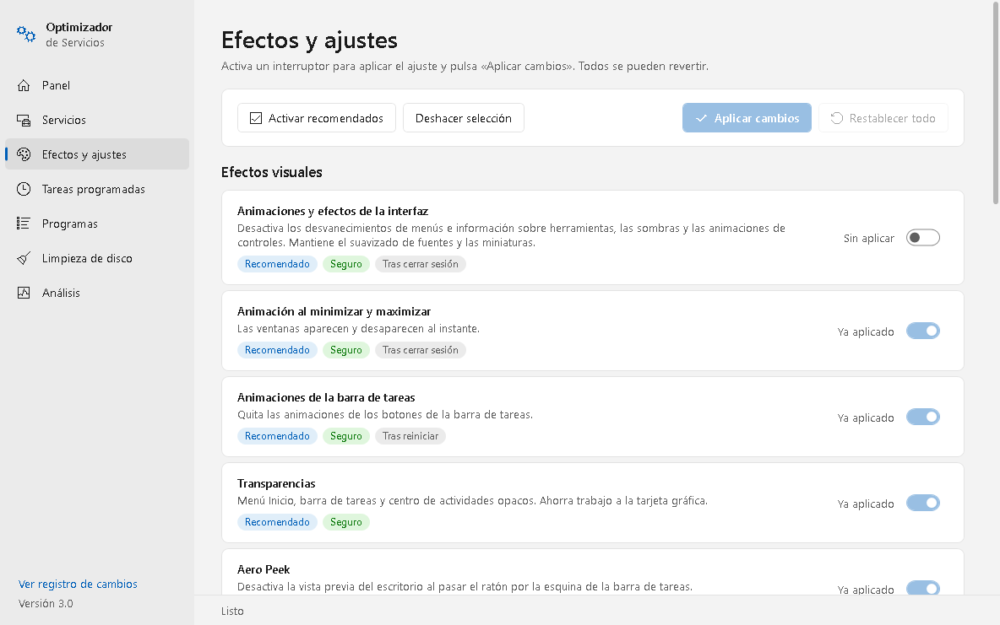
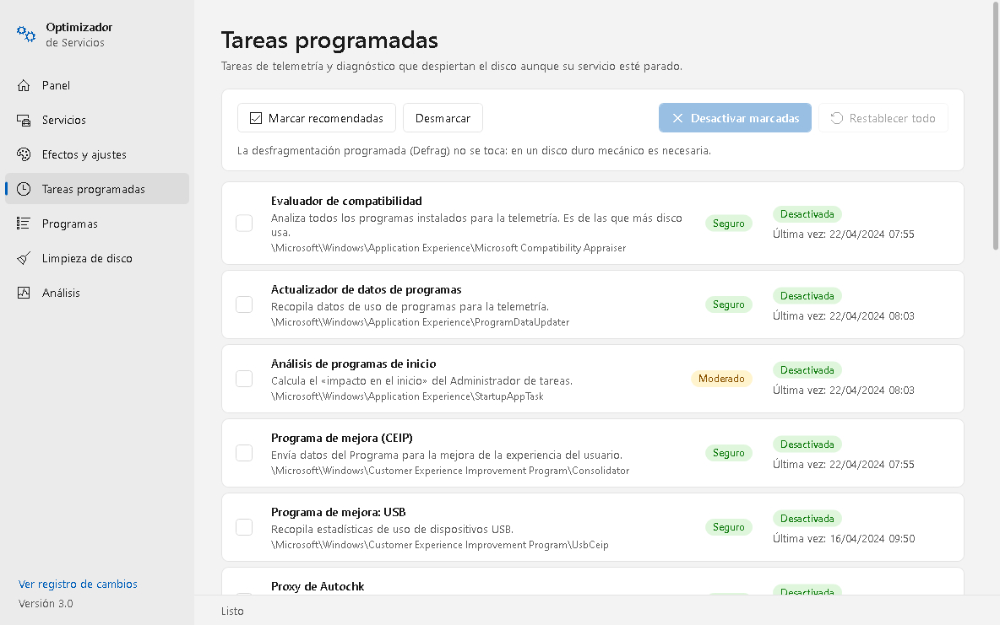
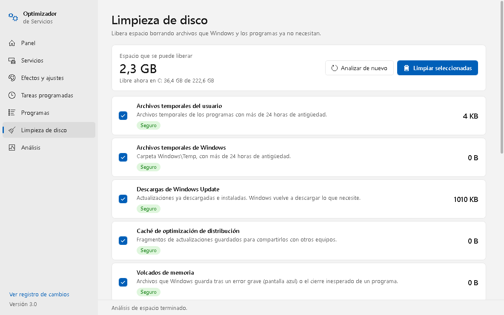
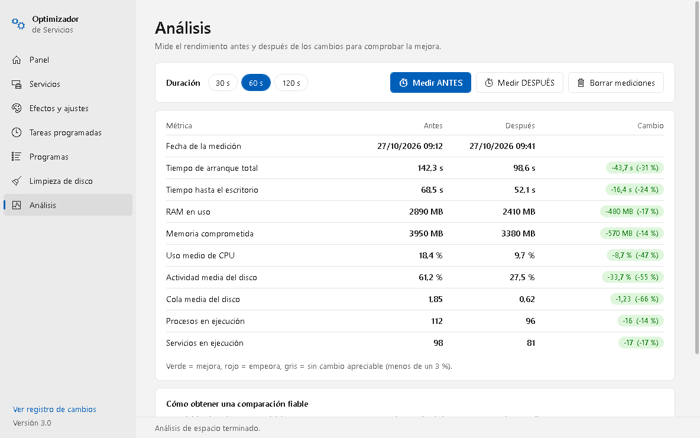

Herramienta portable para mejorar el rendimiento de equipos modestos (4 GB de RAM y disco duro mecánico): desactiva de forma selectiva y reversible servicios, efectos visuales, ajustes, tareas programadas y programas de inicio, elimina aplicaciones preinstaladas, libera espacio en disco y mide el efecto de los cambios antes y después.
OptimizadorServicios.exe
Windows 10 incluye muchos servicios, efectos y tareas que, en un equipo con poca memoria y un disco duro mecánico, compiten por el disco y la RAM aunque el usuario no los necesite. El Optimizador reúne en una sola aplicación lo que más influye en el rendimiento:
| Sección | Para qué sirve |
|---|---|
| Panel | Ver el estado del equipo (procesador, memoria, disco) y recomendaciones. |
| Servicios | Desactivar servicios de Windows que consumen recursos. |
| Efectos y ajustes | Quitar animaciones y transparencias, aplicaciones en segundo plano, anuncios y telemetría. |
| Tareas programadas | Desactivar tareas de telemetría y diagnóstico que despiertan el disco. |
| Programas | Revisar los programas que se inician con Windows y los que más consumen; eliminar aplicaciones preinstaladas. |
| Limpieza de disco | Liberar espacio borrando temporales, restos de actualizaciones y cachés. |
| Análisis | Medir el rendimiento antes y después de los cambios. |
El programa no modifica Windows Update ni Windows Defender, para no comprometer la seguridad del equipo.
| Requisito | Detalle |
|---|---|
| Sistema operativo | Windows 10 (también funciona en Windows 11). |
| .NET Framework 4.8 | Incluido de serie en Windows 10. No hay que instalar nada. |
| Permisos | Administrador. Al abrirlo, Windows pide confirmación (aviso de Control de cuentas de usuario). |
| Instalación | Ninguna: es un único archivo portable que se puede llevar en un USB. |
OptimizadorServicios.exe desde la sección Releases del repositorio en GitHub.Cada servicio, ajuste, tarea o aplicación lleva un distintivo que indica la probabilidad de que el cambio afecte a algo que usas:
| Distintivo | Significado |
|---|---|
| Seguro | No afecta al uso normal del equipo en la gran mayoría de casos. |
| Moderado | Puede notarse en algún caso (por ejemplo, la búsqueda es más lenta o una aplicación deja de avisar). |
| Arriesgado | Deja de funcionar algo concreto (imprimir, Bluetooth...). Desactívalo solo si sabes que no lo usas. |
Los servicios llevan además un distintivo azul de mejora (alta, media o baja), que indica cuánto rendimiento se gana.
Antes de cambiar algo por primera vez, el programa guarda su estado original en C:\ProgramData\OptimizadorServicios\.
Aunque se aplique el mismo cambio varias veces, se conserva siempre el estado original, de modo que Restablecer todo
devuelve el equipo a como estaba antes de usar el programa. Además, al desactivar servicios se puede crear un
punto de restauración de Windows.
| Archivo | Contenido |
|---|---|
backup.json | Estado original de los servicios cambiados. |
ajustes-backup.json | Valores originales de los efectos y ajustes aplicados. |
tareas-backup.json | Estado original de las tareas programadas desactivadas. |
mediciones.json | Mediciones ANTES y DESPUÉS. |
estado.json | Fecha del último cambio, para saber si falta reiniciar o medir. |
registro.log | Historial de todas las acciones, con fecha y hora. |
Para que la mejora se pueda comprobar, el programa guía por este ciclo en Servicios, Efectos y ajustes, Tareas y Programas de inicio:



Cada fila muestra el tipo de inicio y si el servicio está en ejecución. Los ya deshabilitados no se pueden marcar. Si un servicio no se detiene a tiempo (le ocurre a veces a SysMain en discos lentos), queda deshabilitado y se detiene al reiniciar.
| Perfil | Cuándo usarlo |
|---|---|
| Recomendado | Equipos individuales o domésticos. Máxima mejora con riesgo bajo. |
| Conservador | Solo telemetría, diagnósticos, Xbox y extras: el usuario no nota ningún cambio. |
| Oficina / empresa | Como Recomendado, pero mantiene Windows Search (lo necesita la búsqueda de Outlook). |
| Aulas / compartidos | Recomendado, más geolocalización y biometría. |
| Servicio | Mejora | Riesgo | Descripción |
|---|---|---|---|
SysMain | Alta | Seguro | Superfetch: precarga programas en RAM. Principal causa del «disco al 100 %» en HDD. |
WSearch | Alta | Moderado | Indexador de búsqueda. La búsqueda sigue funcionando, más lenta. |
DiagTrack | Alta | Seguro | Telemetría. |
DoSvc | Media | Seguro | Optimización de distribución de actualizaciones. |
dmwappushservice, PcaSvc | Media | Seguro | Mensajes WAP push (telemetría) y Asistente de compatibilidad de programas. |
WerSvc, diagnosticshub…, TrkWks, MapsBroker, RetailDemo, wisvc, WMPNetworkSvc, RemoteRegistry, Fax | Baja | Seguro | Informes de errores, diagnósticos, vínculos, mapas, modo tienda, Windows Insider, uso compartido de Media Player, registro remoto y fax. |
| Servicios de Xbox (4) | Baja | Moderado | Necesarios para juegos de Xbox y Game Pass. |
lfsvc, WbioSrvc | Baja | Moderado | Geolocalización y biometría (huella, Windows Hello). |
Spooler, bthserv, TabletInputService | — | Arriesgado | Impresión, Bluetooth y teclado táctil. Solo si sabes que no los usas. |

Activa el interruptor de cada ajuste que quieras aplicar (o pulsa Activar recomendados) y pulsa Aplicar cambios. Para revertir uno, desactiva su interruptor y aplica. Si Windows ya tenía un ajuste así antes de usar el optimizador, aparece como «Ya aplicado» y bloqueado, porque no hay un estado original al que volver. Algunos tienen efecto tras cerrar sesión o reiniciar, y así lo indica su distintivo gris.
| Ajuste | Riesgo | Qué hace |
|---|---|---|
| Efectos visuales | ||
| Animaciones y efectos de la interfaz | Seguro | Quita desvanecimientos, sombras y animaciones de controles. Mantiene el suavizado de fuentes y las miniaturas. |
| Animación al minimizar y maximizar | Seguro | Las ventanas aparecen y desaparecen al instante. |
| Animaciones de la barra de tareas | Seguro | Quita las animaciones de los botones de la barra. |
| Transparencias | Seguro | Menú Inicio y barra de tareas opacos. |
| Aero Peek | Seguro | Sin vista previa del escritorio en la esquina de la barra. |
| Contenido de las ventanas al arrastrarlas | Seguro | Se mueve solo el contorno de la ventana. |
| Retardo de los menús | Seguro | Los submenús se abren antes (200 ms). |
| Rendimiento | ||
| Aplicaciones en segundo plano | Moderado | Las apps de la Tienda no funcionan cuando no se usan; algunas dejarán de avisar. |
| Game Bar y grabación de juegos | Seguro | Sin grabación de juegos en segundo plano. |
| Fecha de último acceso de los archivos | Seguro | Ahorra escrituras en el disco. |
| Plan de energía de alto rendimiento | Moderado | El procesador no reduce su velocidad. En portátiles gasta más batería. |
| Hibernación | Moderado | Libera varios GB de disco, pero desactiva el inicio rápido, que en discos mecánicos acelera el encendido. |
| Privacidad y anuncios | ||
| Sugerencias, consejos y anuncios | Seguro | Sin sugerencias en Inicio ni instalación automática de apps promocionadas. |
| Identificador de publicidad | Seguro | Sin anuncios personalizados en las apps. |
| Telemetría de Windows | Seguro | Datos de diagnóstico al mínimo que permite cada edición. |
| Cortana | Seguro | Desactiva Cortana; la búsqueda sigue funcionando. |

Windows ejecuta periódicamente tareas de telemetría y diagnóstico que leen y escriben en el disco aunque el servicio correspondiente esté parado. Pulsa Marcar recomendadas y Desactivar marcadas. Cada fila indica si la tarea está activa y cuándo se ejecutó por última vez. Las tareas que no existen en una versión de Windows no aparecen.
Entre ellas: Evaluador de compatibilidad (una de las que más disco usa), Programa para la mejora de la experiencia del usuario, diagnóstico de disco, informes de errores, evaluación del sistema (WinSAT), diagnóstico de eficiencia energética, información del dispositivo y mapas.
La página tiene tres secciones, que se eligen con los botones de la parte superior. También hay accesos directos a Programas y características (panel clásico de desinstalación) y a Aplicaciones y características (Configuración).
Lista los programas de terceros que arrancan con Windows (desde el registro y las carpetas de inicio). De cada uno muestra:
Desactiva el interruptor de los que no necesites al encender el equipo y pulsa Aplicar cambios. Los programas no se desinstalan y se pueden volver a activar aquí o en el Administrador de tareas.
Pulsa Analizar (20 s) mientras usas el equipo con normalidad. Se mide la CPU, la memoria y la actividad de disco de cada programa de terceros (sumando todos sus procesos) y se destaca con «Consumo alto» si supera el 5 % de CPU, 300 MB de RAM o 1 MB/s de disco.
Lista las aplicaciones preinstaladas de la Tienda que se pueden eliminar, con un distintivo:
| Distintivo | Ejemplos |
|---|---|
| Segura de eliminar | Noticias, El Tiempo, Solitaire, Paint 3D, Mapas, Consejos, Centro de opiniones, juegos y apps promocionadas. |
| Se usa a menudo | Fotos, Calculadora, Correo y Calendario, Cámara, Recortes, Teams. |
| Desconocida | Aplicaciones que no están en el catálogo: comprueba qué son antes de eliminarlas. |
No se muestran las aplicaciones del sistema ni las imprescindibles (Tienda, Seguridad de Windows, extensiones de imagen y vídeo, bibliotecas que usan otras aplicaciones). Las apps se eliminan para el usuario actual y se pueden reinstalar desde Microsoft Store. Alguna puede reaparecer tras una actualización grande de Windows.

Al entrar se mide cuánto ocupa cada categoría. Marca lo que quieras borrar y pulsa Limpiar seleccionadas. Los archivos en uso se dejan.
| Categoría | Riesgo | Detalle |
|---|---|---|
| Archivos temporales del usuario y de Windows | Seguro | Solo los de más de 24 horas, para no afectar a programas en marcha. |
| Descargas de Windows Update | Seguro | Actualizaciones ya descargadas; Windows vuelve a descargar lo que necesite. |
| Caché de optimización de distribución | Seguro | Fragmentos de actualizaciones para compartir con otros equipos. |
| Volcados de memoria | Seguro | Archivos de pantallas azules y cierres inesperados. |
| Informes de errores de Windows | Seguro | Informes enviados o pendientes. |
| Caché de miniaturas | Seguro | Se regenera al abrir las carpetas. |
| Caché de los navegadores | Seguro | Edge, Chrome y Firefox. Ciérralos antes para liberar más espacio. |
| Papelera de reciclaje | Moderado | Lo que contiene ya no se podrá recuperar. |
| Componentes de actualizaciones antiguas | Moderado | Limpieza con DISM. Tarda varios minutos y después no se pueden desinstalar las actualizaciones ya instaladas. |
No se borra la carpeta Prefetch, que en un disco mecánico acelera la apertura de programas. Para la carpeta Windows.old (instalación anterior de Windows) usa el botón Abrir el Liberador de espacio en disco.

Elige la duración (30, 60 o 120 segundos) y pulsa Medir ANTES o Medir DESPUÉS. La columna Cambio aparece en verde si mejora, en rojo si empeora y en gris si la diferencia es menor del 3 %.
| Métrica | Qué mide |
|---|---|
| Tiempo de arranque total | Desde que se enciende hasta que el sistema queda en reposo. Lo registra Windows unos minutos después de cada inicio. |
| Tiempo hasta el escritorio | Desde que se enciende hasta que el escritorio es utilizable. |
| RAM en uso / memoria comprometida | Memoria física ocupada y memoria total reservada. |
| Uso medio de CPU | Porcentaje medio del procesador durante la medición. |
| Actividad media del disco | Porcentaje de tiempo que el disco está ocupado. La más importante en un HDD. |
| Cola media del disco | Peticiones esperando al disco. Por encima de 1–2 de forma sostenida indica un cuello de botella. |
| Procesos y servicios en ejecución | Número medio de procesos y servicios activos. |
| Sección | Cómo se deshace |
|---|---|
| Servicios | Botón Restablecer todo: cada servicio vuelve a su tipo de inicio original. |
| Efectos y ajustes | Desactivar el interruptor y aplicar, o Restablecer todo. |
| Tareas programadas | Restablecer todo: cada tarea vuelve a su estado original. |
| Programas de inicio | Volver a activar el interruptor y aplicar (o desde el Administrador de tareas). |
| Apps de la Tienda | Reinstalarlas desde Microsoft Store. |
| Programas desinstalados | Volver a instalarlos. |
| Limpieza de disco | No se puede deshacer. |
| Todo lo anterior | Si se creó, el punto de restauración de Windows (Panel de control › Recuperación). |
Después de restablecer, reinicia el equipo para que los cambios tengan efecto completo.
| Problema | Causa probable | Solución |
|---|---|---|
| «Windows protegió su PC» al abrirlo | El ejecutable no está firmado. | Más información → Ejecutar de todas formas. |
| El antivirus lo bloquea | Cambia la configuración de Windows con permisos de administrador. | Añadir una excepción para el ejecutable. |
| Un servicio aparece «en ejecución hasta reiniciar» | No se detuvo en 20 segundos (frecuente en SysMain con HDD). | Normal: está deshabilitado y no arrancará tras reiniciar. |
| Un servicio vuelve a estar activo | Algunas actualizaciones de Windows restauran servicios (por ejemplo, DoSvc). | Volver a desactivarlo. |
| Un ajuste aparece «Ya aplicado» y bloqueado | Windows ya estaba configurado así antes de usar el optimizador. | Normal: no hay estado original al que volver. |
| La búsqueda de Outlook o del Explorador es lenta | Se desactivó WSearch. | Usar el perfil Oficina o restablecer los servicios. |
| No se puede imprimir | Se desactivó Spooler. | Restablecer los servicios. |
| El Correo o el Calendario no avisan | Se desactivaron las aplicaciones en segundo plano. | Revertir ese ajuste. |
| El equipo tarda más en encender | Se desactivó la hibernación, que también quita el inicio rápido. | Revertir el ajuste Hibernación. |
| No se abre solo tras reiniciar | No se pudo crear la tarea de reapertura (se anota en el registro). | Abrirlo manualmente: ofrecerá igualmente medir DESPUÉS. |
| El tiempo de arranque aparece como «n/d» | Windows aún no ha registrado el arranque, o se usó «Apagar». | Esperar unos minutos y repetir la medición; usar «Reiniciar». |
| La limpieza libera menos de lo previsto | Había archivos en uso. | Cerrar los programas (sobre todo los navegadores) y repetir, o reiniciar antes. |
| Un programa aparece como «no identificado» | No figura en el registro de desinstalación. | Abrir su ubicación y desinstalarlo desde Programas y características. |
| Elemento | Ubicación |
|---|---|
| Datos, copias de seguridad y registro | C:\ProgramData\OptimizadorServicios\ |
| Tarea de reapertura tras reiniciar | Programador de tareas: OptimizadorServicios_MedirDespues (se borra sola) |
| Código fuente y descargas | github.com/jcmunera/optimizador-servicios |